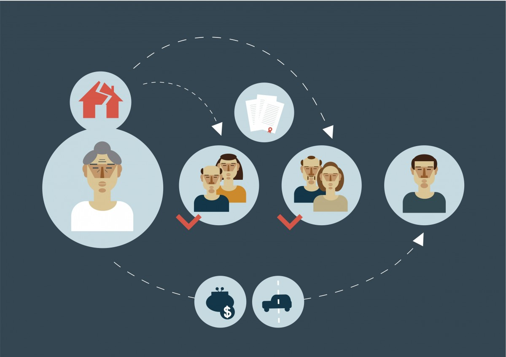

Herencias y sucesiones
Texto de la sección de Inicio
Las herencias y sucesiones se refieren al proceso legal de transferir los bienes y activos de una persona fallecida (causante) a sus herederos o sucesores legales. Esto implica determinar quiénes son los herederos, realizar un inventario de los activos, pagar deudas y gastos, y distribuir la herencia de acuerdo con las leyes de sucesiones y disposiciones testamentarias, si las hubiera. Los herederos forzosos tienen derechos legales a una parte mínima de la herencia, y el proceso sucesorio debe cumplir con los procedimientos legales establecidos.
Texto de la sección de Información
Texto de la sección de Contacto